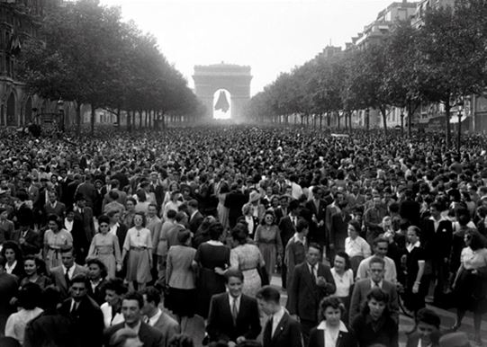
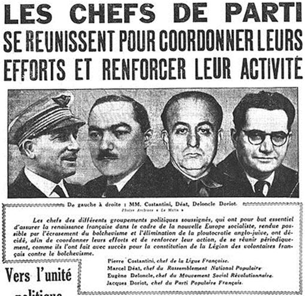

Pour un Français, le 8 Mai marque la fin d’un cauchemar national, celui de l’Occupation et de la Collaboration. Ce jour-là, le nazisme était vaincu, et avec lui une forme de totalitarisme doublement inhumaine par son mépris de la Raison et par les millions de vies sacrifiées à une idéologie absurde. Cette victoire fut obtenue par le courage britannique, la puissance américaine et l’alliance indispensable avec l’autre totalitarisme tout aussi inhumain, bien qu’apparemment moins irrationnel, du communisme. Cette demi-victoire de la liberté devait laisser la moitié de l’Europe derrière le « Rideau de Fer » pendant 45 ans, et plonger le monde dans la guerre froide des blocs, et les multiples conflits chauds qu’elle a entraînés.
Pour un Gaulliste, le mot de ce jour a été prononcé par Keitel : « Quoi . Les Français aussi ? » Malgré la plus humiliante défaite de son histoire, la France à travers la personne du Général De Lattre de Tassigny, était présente lors de la capitulation allemande. Un seul homme avait rendu possible cette résurrection du pays : le Général De Gaulle. Quelles que soient les critiques à l’encontre de celui qui fut à la tête de l’Etat à la Libération, puis entre 1958 et 1969, aucun Français ne peut se soustraire à la reconnaissance envers celui qui sauva l’honneur de la Nation, et lui permit de retrouver la liberté dans la dignité.
Le 8 Mai est le jour qui donne pleinement raison à son génie politique et militaire. Il avait été le premier à percevoir les possibilités stratégiques de l’arme blindée. En 1934, dans « Vers l’Armée de Métier », il avait clairement posé le problème de l’affrontement franco-allemand et lui avait apporté la solution. Deux pays aux coeurs exposés : Paris et la Ruhr. Le premier qui atteint le cœur de l’autre avec l’épée des divisions blindées l’emporte. A part Paul Reynaud, personne ne l’a entendu… en France. Le 18 Juin, c’est avec la même clairvoyance qu’il pronostiqua la victoire des Alliés, qui ne l’étaient même pas encore, mais là le politique prit le pas sur le militaire. Non seulement, l’Allemagne va être submergée par la puissance technique, mais il y va de l’honneur de la France. Elle doit respecter sa parole envers son alliée britannique, et elle ne peut prétendre être la France en se soumettant dans des conditions aussi indignes. La suite, chacun la connaît : maintien d’une France Libre, d’abord fiction entretenue essentiellement par des patriotes de droite comme Rémy ou D’Estienne d’Orves, puis fusion avec une Résistance intérieure unifiée difficilement, ralliement des territoires, constitution d’une armée et participation à la Libération. De Paris à Berchtesgaden, la France a mérité sa place à Berlin. Elle demeure une grande puissance qui siège en permanence au Conseil de Sécurité des Nations Unies.
Le 8 Mai doit nous amener à réfléchir sur la qualité des hommes qui dirigent notre pays. Parce qu’il n’était pas un politicien, mais un professionnel, un militaire, armé d’une puissance intellectuelle et d’un amour de son pays exceptionnels, De Gaulle a eu raison contre le marécage qui a régné entre les deux guerres, et préparé le désastre de 1940 par son incompétence et la médiocrité de ses vues. C’est ce marécage qui a produit la collaboration, celle de Vichy et celle de Paris, Laval, l’opportuniste, allant de gauche à droite à mesure que son aisance personnelle s’amplifiait, les radicaux pacifistes, Bergery, Bousquet, Luchaire, le socialiste Déat, le communiste Doriot et tant d’autres qui ne songeaient qu’ à leurs carrières et à leur pouvoir quelles qu’en soient les conditions pour le Pays.
Un Etat prétendument français a osé salir les mots de Travail, de Famille, de Patrie dans un pays occupé, condamné à travailler pour l’Allemagne et dont les familles étaient brisées par la captivité et la déportation. Soyons lucides : sans la guerre, il n’y aurait pas eu De Gaulle ni les hommes qu’il a entraînés dans son sillage. Avant et après, une pente naturelle, qui semble propre à la douce France et aux Ors de la République, amène et ramène la médiocrité, y compris chez ceux qui se disent encore « gaullistes ». Il n’y a de redressement possible, de « Printemps » pour la France que par une réforme intellectuelle et morale de notre pays et de ses dirigeants.
Renan l’avait souhaité après 1870, Marc Bloch, après 1940. Elle est plus que jamais nécessaire au lendemain d’un désastre économique et social d’une ampleur plus grande encore que ces deux étranges défaites d’un pays qui n’y était pas préparé et que ses chefs avait maintenu dans l’inconscience des périls. Cela s’appelle l’esprit de Résistance qui anime le Rassemblement Pour la France.
Partager cette page